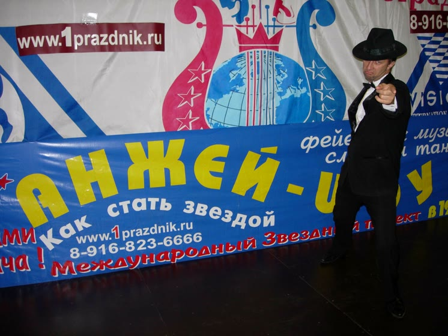
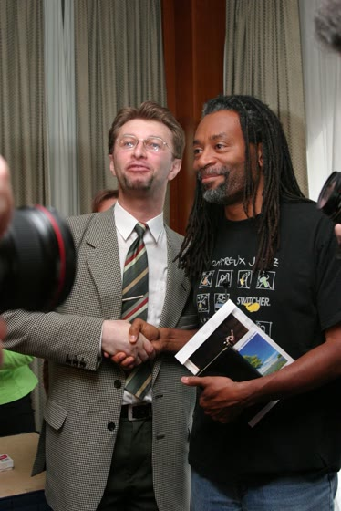
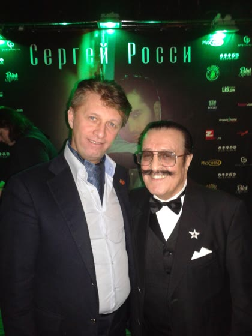
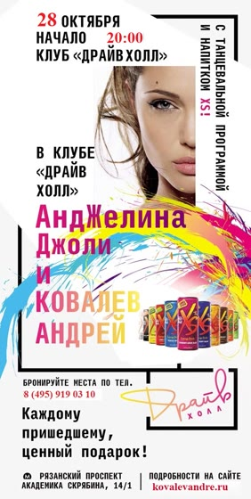
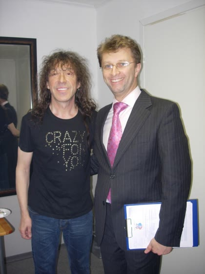
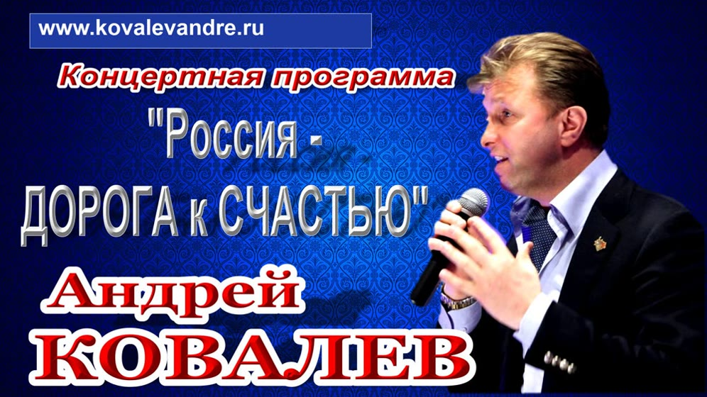
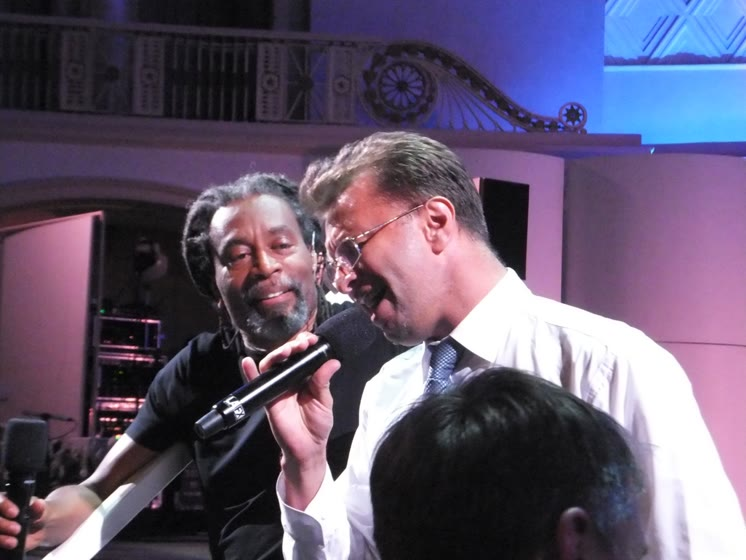
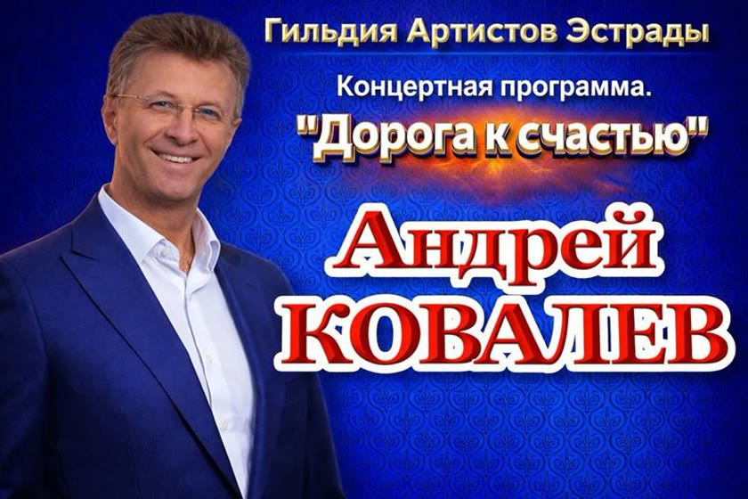
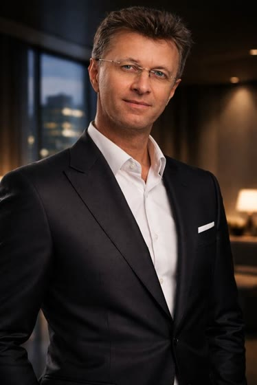

Гильдия Артистов Эстрады
Праздничное агентство
Смотреть на Rutube Новогоднее корпоративное мероприятие с ведущим Анжеем Ковалевым








«Гильдия Артистов Эстрады» предлагает
Праздник под ключ!
Эксклюзивный, оригинальный сценарий!
- Организацию и проведение праздничных мероприятий, фестивалей, шоу программ, рекламных акций, презентаций;
- Организацию и проведение банкетов, юбилеев, свадеб, новогодних вечеров.
Предлагаем для обслуживания праздничных вечеров
- видеограф;
- ведущий, конферансье, тамада;
- в аренду звуко-свето-аппаратура;
- праздничная атрибутика, оформление шарами, дирижабли, цветы;
- салют, фейерверки;
- фото, видео;
- эстрадный ансамбль, дискотека;
- оркестры: духовой, эстрадный, симфонический;
- выездной ресторан;
- банкетные залы, клубы, конгресс-холлы, рестораны выездного обслуживания;
- элитные автомобили бизнес класса лимузины, а также любые другие автомобили;
- шоу 30-ти наций мира;
- лучшие артисты всех жанров, в том числе Звёзды российской эстрады.
Хорошие отзывы о нашей работе вы можете услышать от
- Государственного Советника Администрации Президента Российской Федерации, генерала – полковника ФСБ Полякова Владимира Петровича.
- Генерального директора радио «Европа плюс Н.Н.» – Вячеслава Уланова.
- Руководства Международной выставки «Индустрия праздника».
- Руководства Ассоциации Эстрадных Артистов.
- Руководства Альфа банка.
Праздничные мероприятия «Гильдии»
Нашими профессионалами уже реализованы такие проекты как:
- Кубок президента Российской Федерации по футболу среди инвалидов
- Альфа Банк (проект Свой в Альфе)
- Презентация Форума «Россия Единая»
- Юбилейные вечера компании «Газпром»
- Совместный концерт Валерия Сюткина и Ковалёвых в Кремле
- Праздничный вечер для Российского генералитета ФСБ
- Новогоднее шоу для пивоваренной компании «ПИТ»
- Презентация компании «Oriflame»
- Рекламные акции торговых комплексов: «Мега», «Лига»
- Шоу-программы на «Нижегородской Ярмарке»
- День города Москвы (отдельные площадки 2001 год)
- Юбилейный правительственный концерт для Расула Гамзатова
- Праздничные корпоративные мероприятия для ГИБДД Н.Новгород, радио «Европа плюс» – Анжей-шоу «Как стать звездой» и многие другие.
Видео
Ведущий
Мероприятия
Мы делаем все – от сценария до финального фейерверка! Вы только заказываете праздник по своему вкусу – все остальное берут на себя профессионалы «Гильдии».
Делаем все необходимое для того, чтобы наши клиенты могли думать только об отдыхе. Именно это мы и называем подготовкой и проведением праздника «под ключ».
Надеемся на сотрудничество с уважением
продюсер Андрей Ковалев – «Гильдия Артистов Эстрады»